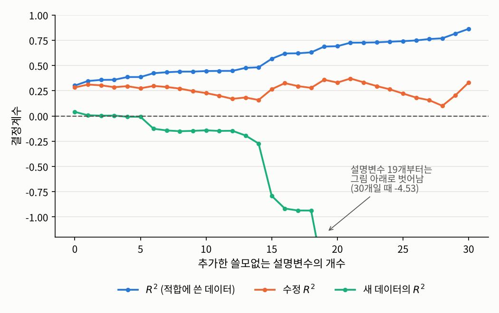

3.4 결정계수와 모형의 설명력
3장 선형 회귀와 분산분석 · 설명된 변동과 남은 변동
들어가며
3.3절에서 최소제곱 적합은 관측값 \(Y\)를 계획행렬의 열공간에 직교사영한 것이었습니다. 이번 글에서는 이 그림에 숨어 있던 또 하나의 피타고라스 정리를 꺼내, 회귀 모형이 데이터의 변동을 얼마나 설명하는지를 재는 결정계수 \(R^2\)를 정의합니다.
\(R^2\)는 회귀 분석 결과에서 가장 먼저 눈에 띄는 숫자이지만, 동시에 가장 많이 오해되는 숫자이기도 합니다. 그래서 정의만큼이나 \(R^2\)가 무엇을 재지 않는지를 분명히 하는 데 이 글의 절반을 씁니다.
문제 1: 모형은 데이터의 변동을 얼마나 설명하는가
문제 상황
3.2절의 학생 50명 데이터에서 두 설명변수로 반응변수를 회귀했습니다. 반응변수의 값은 학생마다 다른데, 그 차이 가운데 얼마만큼이 두 설명변수로 설명되고 얼마만큼이 설명되지 않고 남았을까요?
접근 아이디어
비교의 기준이 필요합니다. 가장 단순한 예측은 설명변수를 전혀 쓰지 않고 모든 학생의 \(y\)를 평균 \(\bar{y}\) 하나로 예측하는 것입니다. 이 예측이 틀린 정도, 즉 \(\sum_i (y_i - \bar{y})^2\)가 “설명해야 할 전체 변동”입니다. 회귀 모형을 쓰면 틀린 정도가 잔차제곱합 \(\sum_i (y_i - \hat{y}_i)^2\)로 줄어듭니다. 그렇다면 줄어든 만큼이 회귀 모형이 “설명한 변동”일 것입니다.
2.4절에서 \(\eta^2\)를 정의할 때 썼던 것과 같은 발상입니다. 그때는 전체 흩어짐을 “집단 평균의 차이”와 “집단 안의 개인차”로 나눴는데, 이번에는 “회귀로 설명된 부분”과 “잔차”로 나눕니다.
필요한 개념들
이 세 이름은 교재마다 약어가 달라서 주의가 필요합니다. 어떤 책은 설명제곱합을 SSR(regression)이나 SSE(explained)로 쓰고, 다른 책은 잔차제곱합을 SSE(error)로 쓰기도 합니다. 그래서 같은 SSE가 책에 따라 정반대의 뜻이 되기도 합니다. 이 글에서는 혼동을 피하기 위해 RSS와 ESS로 씁니다.
증명에서 절편 열이 결정적인 역할을 했습니다. 만약 절편 없이 \(Y_i = \beta_1 x_{i,1} + \cdots + \beta_{d-1} x_{i,d-1} + \varepsilon_i\)처럼 원점을 지나도록 강제한 모형을 쓰면 \(\bar{Y}\mathbf{1}_n\)이 열공간에 있다는 보장이 없어서 이 분해가 깨집니다. 이 장에서 언제나 절편이 있는 모형을 기준으로 삼는 이유 가운데 하나입니다.
정리 3.4.2에 의해 \(0 \le R^2 \le 1\)입니다. \(R^2 = 0.7\)은 “이 표본에서, 평균 하나로 예측할 때의 변동 가운데 70%가 회귀 모형으로 설명된다”는 뜻입니다. 다른 말로 하면, \(R^2\)는 평균 하나로 예측하는 가장 단순한 모형에 비해 잔차제곱합을 몇 퍼센트나 줄였는가입니다.
결정계수는 2장의 상관계수와도 깔끔하게 연결됩니다.
2.4절의 정리 2.4.5에서 미리 본 \(R^2 = r^2\)가 바로 이 정리의 특수한 경우입니다. 설명변수가 여러 개일 때는 “관측값과 적합값의 상관계수”로 일반화됩니다.
해결
3.2절의 데이터로 분해와 결정계수를 계산해 보겠습니다.
import numpy as np
np.random.seed(1557)
n = 50
x1 = np.random.uniform(0, 10, size=n)
x2 = np.random.normal(5, 2, size=n)
X = np.column_stack([np.ones(n), x1, x2]) # 3.2절과 같은 데이터
y = X @ np.array([1.0, 2.0, -0.5]) + 3 * np.random.normal(size=n)
y_hat = X @ np.linalg.solve(X.T @ X, X.T @ y)
sst = np.sum((y - y.mean())**2)
rss = np.sum((y - y_hat)**2)
ess = np.sum((y_hat - y.mean())**2)
d = X.shape[1] # 절편을 포함한 회귀계수의 개수
print(f"SST = {sst:.2f}, RSS + ESS = {rss:.2f} + {ess:.2f} = {rss + ess:.2f}")
print(f"R^2 = {1 - rss / sst:.4f}, 수정 R^2 = {1 - (n - 1) / (n - d) * rss / sst:.4f}")SST = 2382.00, RSS + ESS = 628.93 + 1753.07 = 2382.00
R^2 = 0.7360, 수정 R^2 = 0.7247분해가 정확히 성립하고, 반응변수의 변동 가운데 약 74%가 두 설명변수로 설명됩니다.
문제 2: 설명변수를 늘리면 모형이 좋아지는가
문제 상황
\(R^2\)가 높을수록 좋은 모형이라면, 설명변수를 하나라도 더 넣는 것이 언제나 이득일까요? 극단적인 실험을 해 보겠습니다. 반응변수와 아무 관계가 없는 순수한 잡음을 설명변수로 하나씩 추가하면 \(R^2\)는 어떻게 될까요?
필요한 개념들
답은 놀랍게도 “언제나 커지거나 그대로”입니다.
그림자의 비유로 말하면, 바닥을 넓힐수록 물체에서 바닥까지의 거리는 짧아질 수밖에 없습니다. 추가한 열이 순수한 잡음이어도, 그 잡음이 우연히 \(Y\)의 잔차와 조금이라도 비슷한 방향을 가리키면 잔차가 줄어듭니다. 그래서 \(R^2\)로는 설명변수의 개수가 다른 모형을 공정하게 비교할 수 없습니다.
수정 결정계수 \(R_a^2\)는 이 문제를 일부 보정합니다. 정의 3.4.3에서 보듯이 \(R_a^2\)는 \(\mathrm{RSS}\)와 \(\mathrm{SST}\)를 각각의 자유도로 나눈 값, 즉 3.3절에서 본 오차 분산의 불편추정량과 전체 분산의 불편추정량의 비를 씁니다. 설명변수를 하나 추가하면 \(\mathrm{RSS}\)는 줄지만 자유도 \(n - d\)도 하나 줄어들기 때문에, 잔차가 충분히 줄지 않으면 \(R_a^2\)는 오히려 작아집니다. \(R_a^2\)는 음수가 될 수도 있습니다.
하지만 모형을 평가하는 가장 정직한 방법은 따로 있습니다. 적합에 쓰지 않은 새 데이터에서 예측이 얼마나 맞는지를 보는 것입니다. 새 데이터 \((x_j^{\text{new}}, y_j^{\text{new}})\)에서 같은 식을 계산한
\[R^2_{\text{pred}} := 1 - \frac{\sum_j \big(y_j^{\text{new}} - \tilde{x}_j^{\text{new}\top}\hat{\beta}\big)^2}{\sum_j \big(y_j^{\text{new}} - \bar{y}^{\text{new}}\big)^2}\]
를 예측 결정계수라고 하겠습니다. 정리 3.4.2의 분해는 적합에 쓴 데이터에서만 성립하므로, \(R^2_{\text{pred}}\)는 \(0\)보다 작아질 수 있습니다. 음수라는 것은 모형으로 예측하는 것이 평균 하나로 예측하는 것보다 못하다는 뜻입니다.
해결
참된 모형이 \(Y = 1 + 0.5x + \varepsilon\)(\(\sigma = 3\))인 데이터 40개에, 순수한 잡음인 설명변수를 0개부터 30개까지 늘려 가며 추가해 보겠습니다. 같은 모형에서 뽑은 새 데이터 1만 개로 예측 결정계수도 함께 계산합니다.
def r2_scores(X, y, X_test, y_test):
n, d = X.shape # d: 절편을 포함한 회귀계수의 개수
b = np.linalg.lstsq(X, y, rcond=None)[0]
rss = np.sum((y - X @ b)**2); sst = np.sum((y - y.mean())**2)
r2 = 1 - rss / sst
r2_adj = 1 - (n - 1) / (n - d) * rss / sst
r2_pred = 1 - np.sum((y_test - X_test @ b)**2) / np.sum((y_test - y_test.mean())**2)
return r2, r2_adj, r2_pred
np.random.seed(1557)
n, n_test, k_max = 40, 10_000, 30
x = np.random.uniform(0, 10, size=n); x_t = np.random.uniform(0, 10, size=n_test)
y = 1 + 0.5 * x + 3 * np.random.normal(size=n) # 참된 모형: 설명변수는 x 하나
y_t = 1 + 0.5 * x_t + 3 * np.random.normal(size=n_test) # 같은 모형에서 뽑은 새 데이터
Z = np.random.normal(size=(n, k_max)); Z_t = np.random.normal(size=(n_test, k_max)) # 쓸모없는 설명변수
for k in [0, 5, 10, 20, 30]:
X = np.column_stack([np.ones(n), x, Z[:, :k]])
X_t = np.column_stack([np.ones(n_test), x_t, Z_t[:, :k]])
r2, r2_adj, r2_pred = r2_scores(X, y, X_t, y_t)
print(f"쓸모없는 변수 {k:>2}개: R^2 = {r2:.3f}, 수정 R^2 = {r2_adj:.3f}, 새 데이터의 R^2 = {r2_pred:.3f}")쓸모없는 변수 0개: R^2 = 0.301, 수정 R^2 = 0.283, 새 데이터의 R^2 = 0.041
쓸모없는 변수 5개: R^2 = 0.386, 수정 R^2 = 0.274, 새 데이터의 R^2 = -0.008
쓸모없는 변수 10개: R^2 = 0.445, 수정 R^2 = 0.227, 새 데이터의 R^2 = -0.142
쓸모없는 변수 20개: R^2 = 0.691, 수정 R^2 = 0.331, 새 데이터의 R^2 = -1.615
쓸모없는 변수 30개: R^2 = 0.863, 수정 R^2 = 0.331, 새 데이터의 R^2 = -4.535
결과는 세 가지를 보여 줍니다.
- \(R^2\)는 잡음만 넣어도 계속 올라갑니다. 아무 의미 없는 변수 30개를 넣자 \(R^2\)가 \(0.30\)에서 \(0.86\)이 되었습니다. 절편을 포함한 회귀계수가 32개, 데이터가 40개이니 모형이 데이터의 우연한 흔들림까지 외워 버린 것입니다. 이를 과적합(overfitting)이라고 합니다.
- 수정 결정계수는 부풀림을 상당 부분 막지만 완벽하지는 않습니다. \(R_a^2\)는 \(0.1\)에서 \(0.37\) 사이를 오르내릴 뿐 \(R^2\)처럼 치솟지는 않습니다. 하지만 잡음 변수가 많을 때 오히려 처음보다 커지기도 해서, 쓸모없는 변수를 확실히 걸러 주지는 못합니다.
- 새 데이터에서는 진실이 드러납니다. 예측 결정계수는 잡음 변수를 넣을수록 떨어져서 결국 \(-4.5\)가 됩니다. 적합에 쓴 데이터에서는 86%를 설명하던 모형이, 새 데이터에서는 평균 하나로 예측하는 것보다 훨씬 못한 셈입니다.
이것이 데이터 사이언스에서 데이터를 학습용과 평가용으로 나누는 이유입니다. 모형을 고르는 일은 적합에 쓴 데이터의 \(R^2\)가 아니라, 새 데이터에서의 성능으로 판단해야 합니다. 설명변수를 고르는 체계적인 방법은 5장의 \(F\)-검정에서 다시 다룹니다.
문제 3: \(R^2\)가 작으면 모형이 틀린 것인가
문제 상황
거꾸로, \(R^2\)가 낮게 나오면 모형이 잘못되었다는 뜻일까요? 그리고 \(R^2\)가 높으면 모형이 맞다는 뜻일까요?
해결
두 질문의 답은 모두 “아니요”입니다.
\(R^2\)가 작아도 모형은 맞을 수 있습니다. 문제 2에서 잡음 변수를 하나도 넣지 않은 경우를 다시 보겠습니다. 이때 적합한 모형은 참된 모형과 정확히 같은 꼴인데도 \(R^2 = 0.30\)에 불과했습니다. 사실 이 모형의 모집단 결정계수는 \(X \sim \mathrm{Unif}[0, 10]\)에서 \(\mathrm{Var}(0.5X) = 0.25 \times 100/12 \approx 2.08\)이고 오차의 분산이 \(9\)이므로
\[\frac{\mathrm{Var}(0.5X)}{\mathrm{Var}(0.5X) + \sigma^2} \approx \frac{2.08}{2.08 + 9} \approx 0.19\]
밖에 되지 않습니다. 오차가 크면 아무리 올바른 모형이라도 \(R^2\)는 작습니다. \(R^2\)가 작다는 것은 “이 설명변수들만으로는 \(Y\)를 정확히 예측할 수 없다”는 뜻일 뿐, “모형이 틀렸다”는 뜻이 아닙니다. 기울기 \(0.5\) 자체는 여전히 의미 있는 정보일 수 있습니다.
\(R^2\)가 커도 모형은 틀릴 수 있습니다. 3.3절의 잔차 그림 (b)를 떠올리시기 바랍니다. 곡선 관계에 직선을 적합해도 \(R^2\)는 꽤 높게 나올 수 있지만, 잔차에는 뚜렷한 U자 패턴이 남습니다. \(R^2\)는 모형의 모양이 맞는지를 재지 않습니다. 그것을 확인하는 것은 잔차 그림의 몫입니다.
정리: 결정계수를 읽는 법
이번 글의 내용을 정리하면 다음과 같습니다.
| 뜻 | 주의할 점 | |
|---|---|---|
| \(R^2\) | 평균 하나로 예측할 때에 비해 줄어든 잔차제곱합의 비율 | 설명변수를 늘리면 절대 줄지 않음. 개수가 다른 모형을 비교하는 데 쓰면 안 됨 |
| \(R_a^2\) | 자유도로 보정한 \(R^2\) | 쓸모없는 변수에 대한 벌점이 있지만 완벽하지 않음, 음수 가능 |
| \(R^2_{\text{pred}}\) | 새 데이터에서의 같은 비율 | 과적합을 드러냄, 음수 가능 |
그리고 세 숫자 모두 모형이 맞는지는 재지 않습니다. \(R^2\)는 “얼마나 예측할 수 있는가”를 재는 숫자이고, “모형이 옳은가”는 잔차 그림으로, “계수가 정말 \(0\)이 아닌가”는 5장의 검정으로 따로 확인해야 합니다.
지금까지는 설명변수가 모두 수치형이었습니다. 3.5절에서는 범주형 설명변수를 계획행렬에 넣는 방법을 다루고, 그것이 2.4절의 \(\eta^2\)와 분산분석으로 이어진다는 것을 봅니다.
연결되는 개념
- \(\leftarrow\) 이전 개념: 3.3 사영으로 보는 회귀: 햇 행렬과 잔차
- \(\rightarrow\) 다음 개념: 3.5 범주형 설명변수와 분산분석